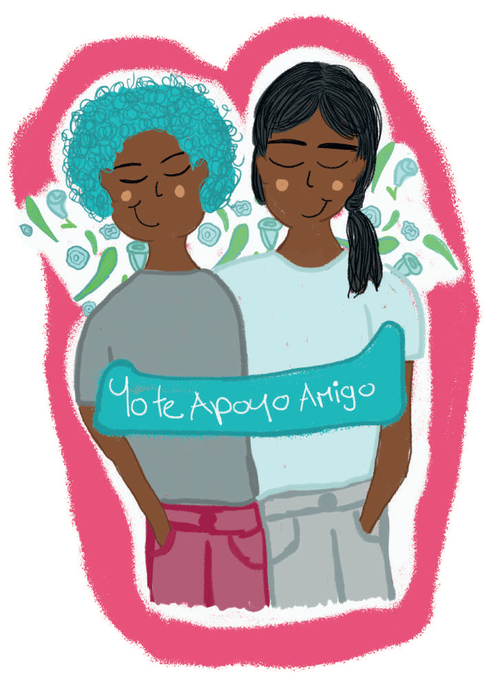

Autocuidado colectivo:
Por ejemplo:
- 🗑️ organizar la disposición de basuras
- 💧 el tratamiento colectivo de aguas
- 🏃‍♂️🌳 practicar un deporte, reforestar o
- 💬 participar en tertulias relacionadas con intereses comunes
- 🎬📚 como compartir las impresiones de una pelÃcula o de un libro,
- ✨ entre otras actividades que procuran el bienestar común.